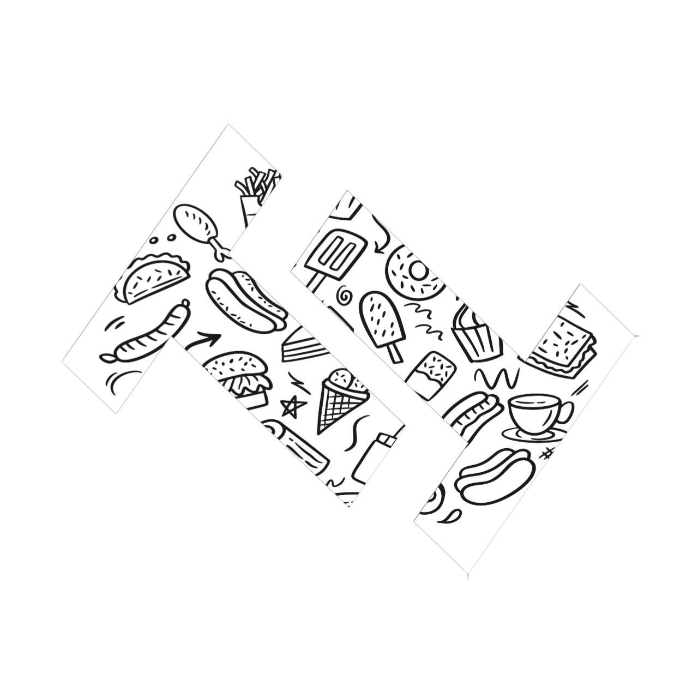

<nav class="navbar navbar-expand-lg navbar-secondary bg-secondary text-white">
  <div class="container">
    <a class="navbar-brand" href="#">
      
      <span class="text-white fs-1">TastyTerks</span>
    </a>
    <div class="ml-auto">
      <ul class="navbar-nav">
        <li class="nav-item">
          <a class="nav-link text-white" [routerLink]="['/register']">Register</a>
        </li>
        <li class="nav-item">
          <a class="nav-link text-white" [routerLink]="['/login']">Login</a>
        </li>
        <li><a class="nav-link text-white " [routerLink]="['/admin']"><i class="fa fa-user-circle-o fa-lg"
              aria-hidden="true"></i></a></li>
      </ul>


    </div>
  </div>
</nav>
